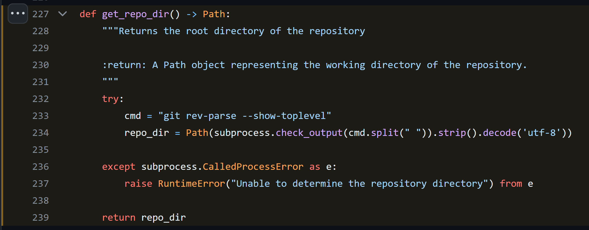

Sphinx Github Style
GitHub source code links and syntax highlighting for Sphinx documentation

About
sphinx-github-style is a Sphinx extension that links your documentation to GitHub source code.
It also adds syntax highlighting for code blocks similar to GitHub’s pretty lights dark theme.
…
GitHub Source Code Links
Using sphinx.ext.linkcode, a View on GitHub link is added to the documentation of every class, method, function, and property:
-
sphinx_github_style.utils.git.get_repo_dir()View on GitHub
View Source Code
def get_repo_dir() -> Path: """Returns the root directory of the repository :return: A Path object representing the working directory of the repository. """ try: cmd = "git rev-parse --show-toplevel" repo_dir = Path(subprocess.check_output(cmd.split(" ")).strip().decode('utf-8')) except subprocess.CalledProcessError as e: raise RuntimeError("Unable to determine the repository directory") from e return repo_dir Returns the root directory of the repository
- Returns
A Path object representing the working directory of the repository.
- Return type
They link to and highlight the corresponding code block in your GitHub repository:
Note
These links can be styled with CSS and used with/instead
of the links added by sphinx.ext.viewcode
Syntax Highlighting
sphinx-github-style also contains a Pygments style to highlight code blocks similar to GitHub:
def get_repo_dir() -> Path:
"""Returns the root directory of the repository
:return: A Path object representing the working directory of the repository.
"""
try:
cmd = "git rev-parse --show-toplevel"
repo_dir = Path(subprocess.check_output(cmd.split(" ")).strip().decode('utf-8'))
except subprocess.CalledProcessError as e:
raise RuntimeError("Unable to determine the repository directory") from e
return repo_dir
Configuration
Add the extension to your conf.py
extensions = [
"sphinx_github_style",
]
Optional Configuration Variables
Add any (or none) of the following configuration variables to your conf.py
linkcode_blob
- linkcode_blob
The blob to link to on GitHub - any of
"head","last_tag", or"{blob}"head(default): links to the most recent commit hash; if this commit is tagged, uses the tag insteadlast_tag: links to the most recent commit tag on the currently checked out branchblob: links to any blob you want, for example"master"or"v2.0.1"
- Type
str- Default
"head"
linkcode_url
- linkcode_url
The link to your GitHub repository formatted as
https://github.com/user/repoIf not provided, will attempt to create the link from the
html_contextdict
- Type
str- Default
f"https://github.com/{html_context['github_user']}/{html_context['github_repo']}/{html_context['github_version']}"
linkcode_link_text
- linkcode_link_text
The text to use for the linkcode link
- Type
str- Default
"View on GitHub"
linkcode_resolve
- linkcode_resolve
A
linkcode_resolve()function to use when resolving the link target withsphinx.ext.linkcode- Type
Callable- Default
Return value from
get_linkcode_resolve()